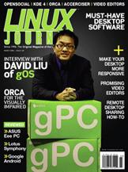

Shutdown Archive web server
Search:
Linux Journal
Issue #167/March 2008

Features
Desktop Must-Haves
by Dan Sawyer
Here's the guide to what you must have to slide easily into the Linux desktop experience.
Behind the Low-End Linux Box that Sold Out at Wal-Mart
by Doc Searls
Doc Searls interviews Dave Liu of gOS.
KDE 4 Preview
by Jes Hall
A peek at the revolutionary new version of KDE.
Orca—Take the Killer Whale for a Ride
by Willie Walker
The Orca screen reader helps people with visual impairments access the desktop. It also can serve as a useful tool for developers to check their applications for accessibility.
Make Your Application Accessible with Accerciser
by Eitan Isaacson
Find and solve access issues; your users will thank you.
Indepth
Multitrack Video Editor Roundup
by Dan Sawyer
Video editing in Linux continues to improve.
Maximize Desktop Speed
by Federico Kereki
Linux is known for its speed, even on older hardware, but you will appreciate it even more after making these performance-enhancing tweaks.
Columns
Reuven M. Lerner's At the Forge
OpenSocial and Google Gadgets
Marcel Gagné's Cooking with Linux
My Desktop Lies over the Ocean
Dave Taylor's Work the Shell
Understanding Shell Script Shorthand
Mick Bauer's Paranoid Penguin
Security Features in Ubuntu
Kyle Rankin's Hack and /
Automate Your Desktop with wmctrl
Doc Searls' EOF
Driving Markets from Our Own Kernels
Reviews
ASUS Eee PC
by Jes Hall
IBM's Unfinished Symphony
by Bruce Byfield
Domo Arigato Mr Androidato–An Introduction to the New Google Mobile Linux Framework, Android
by Adam M. Dutko
In Every Issue
Letters
upFRONT
New Products
Archive Index
Shutdown Archive web server
Search:
Copyright © 1994 - 2018
Linux Journal
. All rights reserved.